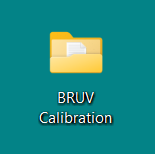
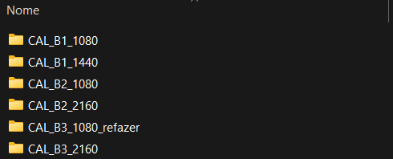
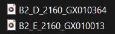
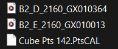
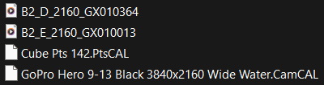
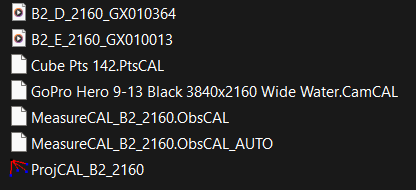
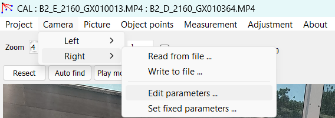
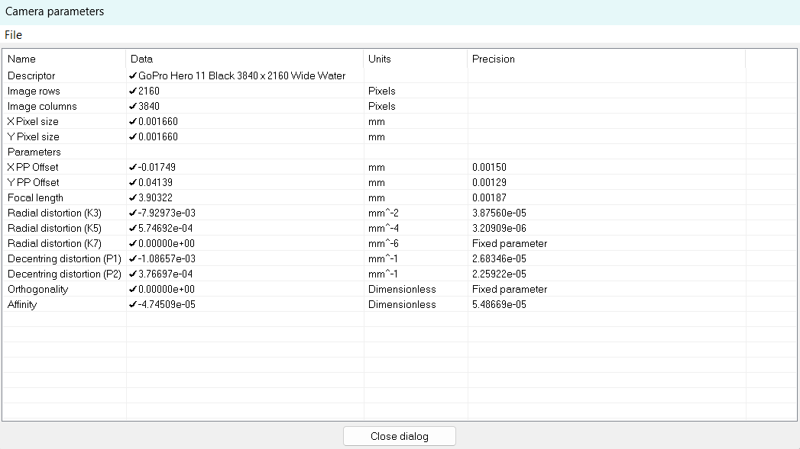

Guia Rápido CAL/ SeaGIS
Organize-se!
Crie um novo diretório (pasta) para armazenar seus projetos de calibração.

Dentro desta pasta, crie novos diretório (multiplas pastas) para cada configuração de BRUV. Estas distinções se baseiam principalmente na resolução da câmera utilizada e no campo de visão (Field of View).

Dentro das respectivas pastas de BRUV, cole os respectivos os arquivos de vídeo (.MP4). Lembre-se, serão dois, um da câmera esquerda (E) e outro da câmera direita (D).


Para facilitar, renomei os arquivos de vídeo (.MP4) conforme a ID do BRUV, o lado da câmera e a resolução utilizada, seguindo nescessáriamente esta ordem. Ao final, mantenha o nome do arquivo original gerado pela câmera. Não utilize espaços nem caracteres especiais.
Ex: B2_D_2160_GX010364 (bruvID_lado_resolucao_nome original).
Na mesma pasta de trabalho, adicione também a cópia do arquivo de calibração do cubo (.PtsCAL).


O arquivo de calibração do cubo (.PtsCAL) variam de acordo com o modelo de cubo de calibração utilizado. Estes arquivos são fornecidos pela SeaGIS no momento da compra. Se necessário, contacte a representação da empresa.
Além disso, adicione o arquivo de parâmetros da câmera (.CamCAL), conforme modelo e configuração empregada. Estes arquivos são fornecidos pela SeaGIS, no site: https://www.seagis.com.au/download.php.

Ao final, você terá, normalmente, 04 (quatro) arquivos:
- Vídeo da Câmera Esquerda (.MP4);
- Vídeo da Câmera Direita (.MP4);
- Arquivo de calibração do cubo (.PtsCAL), conforme modelo.
- Arquivo de parâmetros da câmera (.CamCAL), conforme modelo e resolução.Com o PEN-DRIVE fornecido pela SeaGIS conectado ao seu computador, inicie o programa de calibração CAL (Downloads: https://www.seagis.com.au/download.php)
No CAL, crie um novo projeto através do menu: Project | New project

Você será solicitado para salvar quaisquer dados não salvos associados ao projeto atual. Insira um nome para o arquivo do projeto (por exemplo, “ProjCAL_B2_2160”) e salve o arquivo do projeto no diretório que você acabou de criar para este projeto.


::: {.callout-note appearance="simple"}
A criação de um novo projeto inicia um processo de assistente do próprio programa que irá solicitar a configuração do restante do projeto. Basta seguir as instruções, lembrando que todos os arquivos estão localizados no mesmo diretório, e que o CAL usará, por padrão, o diretório onde o novo arquivo de projeto foi criado.
:::Carregue os arquivos de parâmetro da câmera esquerda e direita (.CamCAL), conforme solicitado.
Atenção! É um mesmo arquivo (.CamCAL) para ambas as câmeras, pois utilizamos em cada lado do BRUV câmeras de mesmo modelo e mesma configuração.
Carregue o arquivo do cubo de calibração (.PtsCAL), conforme solicitado.
Defina o diretório de imagens conforme solicitado.
O diretório de imagens é automaticamente definido como o mesmo diretório do arquivo do projeto; portanto, se todos os arquivos da calibração estiverem em um único diretório, basta verificar e clicar em OK.
O programe pedirá para que salve o novo arquivo de medições (.ObsCAL) que será atrelado ao projeto. Basta atribuir um nome a esse arquivo (por exemplo, “MeasureCAL_B2_2160”). Este arquivo será o local onde as medições da calibração serão armazenadas.
O programa também irá gerar um arquivo de backup automático das medições (.ObsCAL_AUTO).

Carregue o arquivo de vídeo da câmera ESQUERDA. Ele será automaticamente adicionado à configuração da sequência de filmes. Caso existam mais arquivos de vídeo na sequência, eles podem ser adicionados nesse momento (ver Sequências de filmes). Em seguida, clique em OK.
Carregue o arquivo de vídeo da câmera DIREITA. Idem.
A janela Current project files (Arquivos do projeto atual) será exibida. Todos os campos devem estar preenchidos e todos os itens listados devem estar no mesmo diretório. Clique em Close dialog (Fechar diálogo).

Explore mais!
Se for em Camera | Left/Right | Edit parameters, você terá acesso as características ópticas da câmara.

Essas informações são importantes quando se trabalha cientificamente com a visão.

É importante sempre anotar a versão do programa. Essas informações devem constar na seção de métodos de possíveis manuscritos acadêmicos, pois representa o estado exato dos algorítimos dos calculos realizados pelo programa.